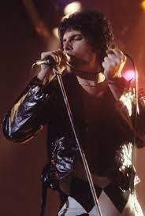

Freddie Mercury 'i Hakkında Söylenenler

- Queen ile birlikte "Under Pressure" şarkısını kaydeden ve The Freddie Mercury Tribute Konserinde sahne alan rock yıldızı David Bowie, Mercury hakkında: "Tüm teatral rock yıldızları içinde Freddie bu işi en ileri götürendir. Tayt giyen bir adama her zaman hayranlık duymuşumdur. Bir kez onun konserini izledim ve gerçekten de dedikleri gibi seyirciyi avuçlarının içine almasını gayet iyi biliyor. Bir klişeyi kendi avantajına dönüştürebiliyor." demiştir.
- Barcelona albümünde Mercury ile birlikte çalışan, opera sanatçısı Montserrat Caballé: "Freddie ile hemen hemen tüm diğer rock yıldızları arasındaki fark, onun sesini satmasını bilmesiydi." şeklinde konuşmuştur.
- Queen'in geride kalan üyelerinden Brian May ve Roger Taylor ile sahne alan pop yıldızı Robbie Williams: "Freddie, eğer oradaysan ve çalışmanı kanalize etmek için bir sanatçı seçmek istiyorsan, lütfen bana bir albüm ya da en azından ortadaki sekizi ver." demiştir.
- Wayne's World adlı filmi ile "Bohemian Rhapsody" yi genç nesillere duyuran komedyen Mike Myers, Mercury için: "Tiyatrosallığı vardı, hayattan daha büyüktü, yeni, taze ve süperdi. İnsan kılığında dolaşan bir tanrıydı." demiştir.
- Rock şarkıcısı Rob Halford: "Freddie'nin öldüğünü duyduğumda çok üzüldüm. Dünya büyük bir yorumcuyu, harika bir sesi, usta bir müzisyeni kaybetti. Tanrıya şükür, sonsuza dek dinleyebileceğimiz müziği var." demiştir
- "Onu seyrettim, öldüğünü gördüm, ve benim için çok acı vericiydi, çünkü onu gerçekten çok seviyordum, sesi ile uyumlu yaşadı ve öldü." Dave Mustaine (Megadeth).
- Kurt Cobain'in intihar ettiğinde (1994) bıraktığı iddia edilen notta şunlar yazılıdır: "Okurken veya yazarken müzik dinleme veya müzik oluşturma zevkini yıllardır hissetmedim. Bu konuda hissettiğim suçluluk duygusunu tarif etmeye kelimeler yetmez. Örneğin, sahne arkasında iken ve ışıklar sönüp de kalabalığın çılgınca haykırışları başladığında, bu beni Freddie'yi etkilediği gibi etkilemiyordu. Freddie bundan hoşlanıyordu, kalabalıktan gelen sevgi ve hayranlıktan tat alıyordu, ki buna hep saygı duymuş ve kıskanmışımdır.
- Bir radyo röportajında şarkıcı Tori Amos, 1999'daki şarkısını (Sugar) yazabilmek için Freddie Mercury'nin ruhunu çağırdığını söylemiştir: "Banyodaydım. Kafamın içindeki ses Freddie'ninki idi, akorlarla oynuyordum ve bu şarkıyı yazmama neden olan bu şeyleri düşünüyordum ve birden onun: "Şeker, o bana şeker getiriyor" dediğini duydum. ve dedim ki: "Teşekkürler Freddie..."
- Müzik dünyasından yakın arkadaşı Elton John ise Freddie'nin ölümü üzerine şu cümleyi söylemiştir: "Tanrı en sonunda kare asını tamamladı dostum.. Janis Joplin, John Lennon, Elvis Presley ve sen... Arkadaşım olduğun için teşekkürler.. Seni her zaman seveceğiz."
- Dave Grohl (Foo Fighters) ise her zaman etkilendiği Freddie Mercury'den şöyle söz etmiştir: "Dünyada karşısındaki seyirci kitlesine hitap edebilen 2 insan tanıdım.. Biri Papa, diğeri Freddie Mercury.."
- Daimi dostu Elton John, onun hakkında düşüncelerini şöyle belirtmiştir: "Bu kahrolası adamın(!) sesi o kadar güçlü ki piyano çalarken vokaline dikkat etme ihtiyacı bile hissetmiyor"
|